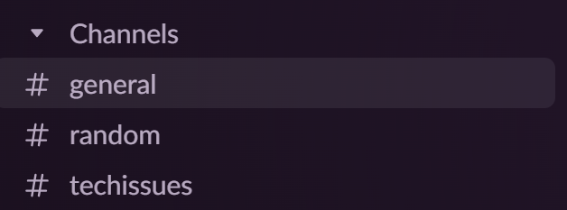

install.packages("usethis")
library(usethis)
use_git_config(user.name = "PUT GITHUB USERNAME HERE", user.email = "PUT GITHUB EMAIL HERE")Tech Setup (2 pts)
SDS 192: Introduction to Data Science, Spring 2026
WarningWarning
Updates to this document are indicated in red.
Introduction
You will be setting up all software and applications that are needed to complete and submit assignments of various forms in SDS 192. We will set up the following tools in this setup:
- Slack
- Perusall
- R/RStudio
- GitHub Classroom
Tip
As you get everything set up, if you run into any hiccups along the way, there are many ways to get help:
- Ask questions in Slack. There will be a
#techissueschannel dedicated for this purpose.- Make sure to be specific in your issue. Indicate which step you are stuck on and include any screenshots.
- Feel free to DM me on Slack or via email. With some more complex issues, I can provide some guidance.
- Ask about these issues in student hours or at the Spinelli Center.
Slack
Slack will be used as a discussion forum, in which you can ask and answer clarifying questions to the whole class, provide perspectives on situations discussed in lab assignments, and find out announcements about the class on a day-to-day basis.
If you run into hiccups with this part, Smith’s ITS department has some quick hints here.
Nonetheless, to set up Slack, you will do the following:
- Accept the Slack invitation via email from this course. Follow the directions in order to get into the course.
- You will see some of the following channels below. Go to the #general channel, go to my “Welcome” post, and reply to the thread with a random fact of your choice.

- Optional, but recommended: Turn on notifications from this workspace (this should already be toggled, but double-check to be sure.) Also, you may be encouraged to download and install Slack on your laptops and phones.
Perusall
Perusall will be used for all reading assignments, in which you will annotate and comment on particular items from weekly readings.
To set up Perusall, you will do the following:
- Use the following link to join the Perusall course: link
- Create a new account. You can do so by signing-in through Google with your smith.edu email address or creating a traditional account with your smith.edu email address.
- Go to Assignments and go to the Test Assignment. You will create one annotation in this assignment. Once you’ve done so, you’re good to go.
Note: Let me know if you are having difficulties accessing Perusall throughout the semester.
R and RStudio
R and RStudio will collectively make up the coding tools we will use to run through data science examples and assignments. R is the coding language that many statisticians and data scientists use to generate data visualizations, complete data wrangling, and run analyses. RStudio is the application that we use to interact with R, formally known as an IDE (i.e. Integrated Development Environment). We will use RStudio particularly when writing R code and walking through problems.
We will need to download and install R and RStudio onto our laptops. If you are running a web-based operating system (e.g. ChromeOS), you will have to use Posit Cloud to run R. Instructions to use Posit Cloud can be seen at the bottom of this section.
For everyone else (e.g. Windows, Mac, Linux), you will download and install R and RStudio using these instructions:
- Go to the following link here.
- Install R first by clicking on “Download and Install R”, which can be found on the left side of the page.
- You will be redirected to https://cran.rstudio.com/.
- Windows: Click on the link to “Download R for Windows”, choose “install R for the first time”, then choose “Download R 4.5.2 for Windows”.
- MacOS: Click “Download R for (Mac) OS X”. Download the install package for version R-4.5.2. Read the information carefully to determine which of the two versions to download.
- Linux: Click on the link to “Download R for Linux”. You will need to choose the version of Linux that corresponds to your installation. Versions are available for Debian, RedHat, SUSE, and Ubuntu.
- Once the R file has been downloaded, please install R by opening the file. Follow all prompts as necessary, keeping things as defaulted as possible.
- Go back to the Posit webpage and follow step 2 on the page by clicking “Download RStudio Desktop for ____”. Once downloaded, install RStudio by opening the file. Follow all prompts as necessary.
For those using Posit Cloud:
- Click the Login button located at the top-right corner of the screen.
- Sign-in using either Google or GitHub.
If you have trouble installing and downloading R/RStudio, we will have some time at the beginning of the first lab to walk through any issues you all have.
git, GitHub, and GitHub Classroom
We will be using git commands, GitHub, and GitHub classroom to collaborate with others on coding and projects, submit coding-relative activities and assignments, and get familiar with data science workflows.
To differentiate between the terms, when referring to “git”, this refers to the software and commands associated with tracking changes in files during software development. The actions “push”, “pull”, “commit”, and others will pop up and we will discuss these in detail throughout the semester. GitHub refers to the application that utilizes the git system to aid in these processes. GitHub Classroom is a special use of GitHub that will allow for specific repositories to be linked to our classroom.
A few actions need to happen to set these items up, which you’ll see in the subsections below.
Setting Up Your R Environment
If you have any troubles, you can use the Happy Git with R textbook for assistance.
Go to GitHub and create a GitHub account, preferably with your smith.edu account. Setup account details.
Open RStudio on your laptop.
Check to ensure you have git installed by opening RStudio and clicking on
Tools > Global Options > Git/SVNtab. Check the top of the pane for a field for the Git executable. It should say something like: “/usr/bin/git” or “C:/Program Files/Git/”. If it says “(Not Found)” git is not installed.In the R console (bottom-left corner), you will input and hit Enter for each of these lines of code (replace what it is in the quotations with your info):
- Put the following line of code in the console:
create_github_token()Define a name for the token and set the expiration date to be 150 days from today’s date. Leave all other settings the same and generate the token.
Once done, please save the token in some fashion. You will not see this token again once you leave the webpage.
- Return to RStudio and run the following lines of code in the console:
library(gitcreds)
gitcreds_set()When prompted for the token, paste the token you created into the console and hit Enter.
If you are needing additional assistance, please use the following videos:
Setting Up GitHub Classroom and Future Repositories
Your current and future RStudio environments are now linked to your GitHub account, providing you access to repositories on GitHub itself. With this in mind, we can now replicate repositories from GitHub in a process called cloning.
- Use the following link below to access the test repository from GitHub Classroom:
You will go through all necessary prompts. Feel free to use this video as a resource: https://www.youtube.com/watch?v=lsQ48kn-uD0
- Copy the URL for your SDS 192 Lab GitHub repo. It should look like the following link:
- https://github.com/sds192lawson/tech-setup-repository-YOUR_USERNAME
- Go back to RStudio. At the top-left corner, click on File > New Project > Version Control > git.
Paste the URL into the first field, type a simple name for the folder in the second field, and choose an appropriate directory on your computer to house the repository. Then, click Create Project.
- Install the
rmarkdownpackage in RStudio by entering the following lines of code in the console.
install.packages("rmarkdown")
library(rmarkdown)On the initial install, the Files tab will be in the lower right hand corner of RStudio. Open practice.qmd, and then follow the prompts in that file. Click Save.
We will now pull, commit, and push changes to the remote repository on GitHub. To do so, go to the Git tab on the top-right corner. From there,
- Click on the blue downward arrow, which pulls updates from the remote repository. This ensures we have the most recent updates.
- Click on the stacked checkmark in the same area, which will allow you to commit changes to the remote repository. Stage each file in the left column by clicking on the checkbox and add a message in the right column that briefly specifies what changes you’ve made to the repository. Click Commit thereafter.
- Click on the green upward area, which pushes updates to the remote repository. A window will pop up, showing the status of the push. If successful, you should see those updated files in your GitHub repository. You can use the URL from step 8 to verify.
Repeat steps 7-9 twice, each for the following two repositories you will use for lecture activities and lab assignments respectively:
- Activities Repo: https://classroom.github.com/a/V5LWa0K6
- Lab Repo: https://classroom.github.com/a/vO0Mut-V
If you are needing additional assistance, please use the following videos: